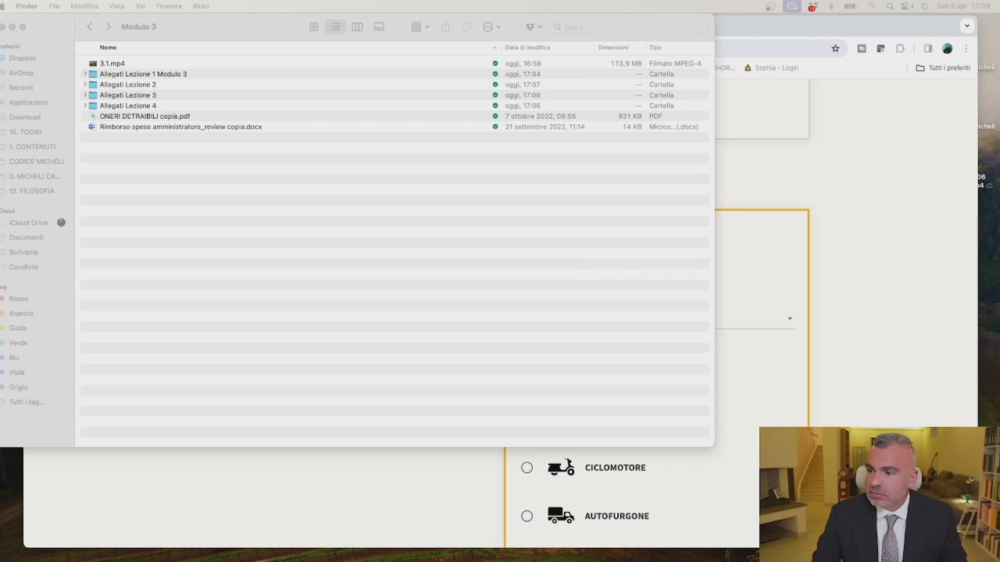
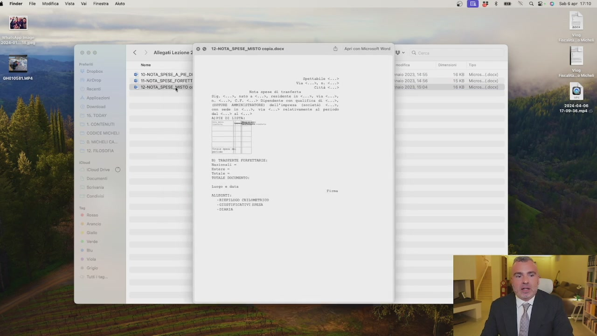
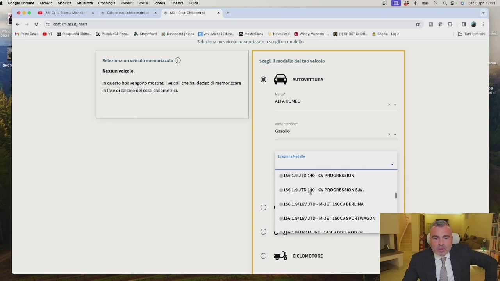
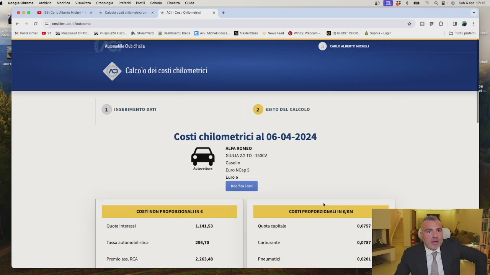
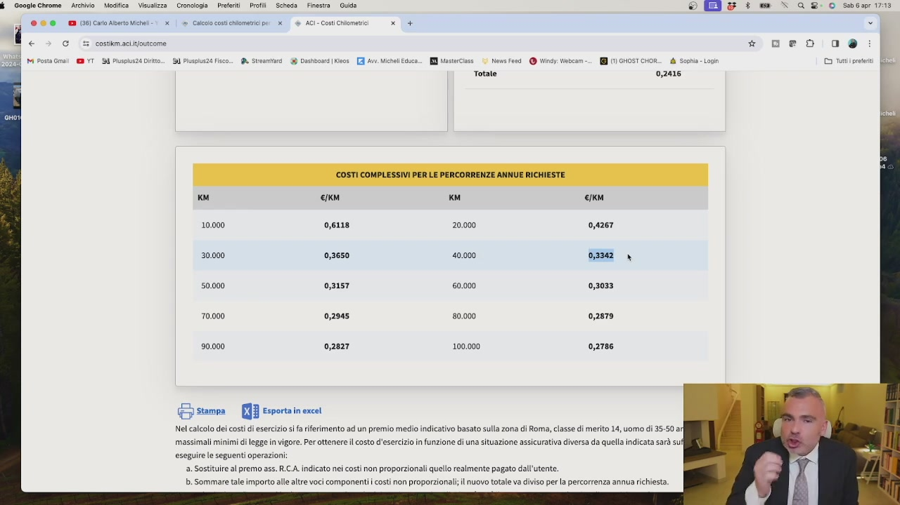
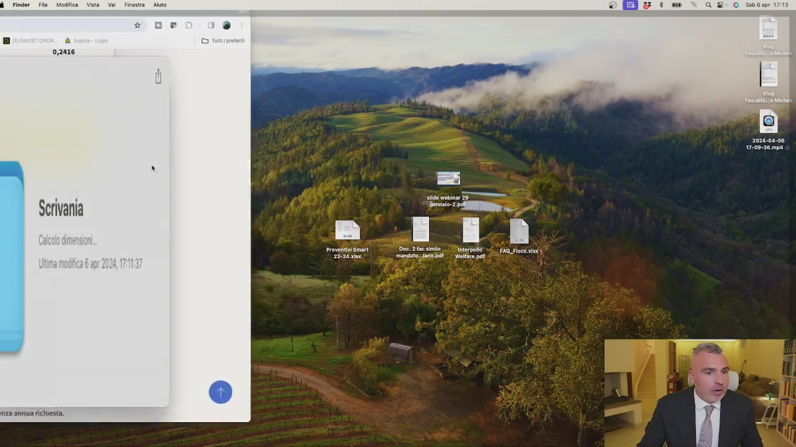
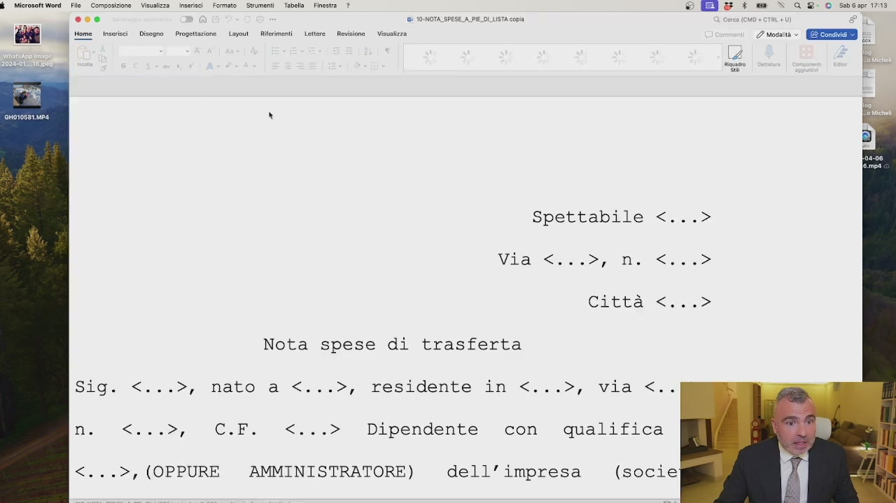
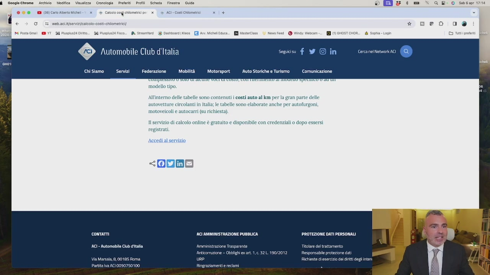
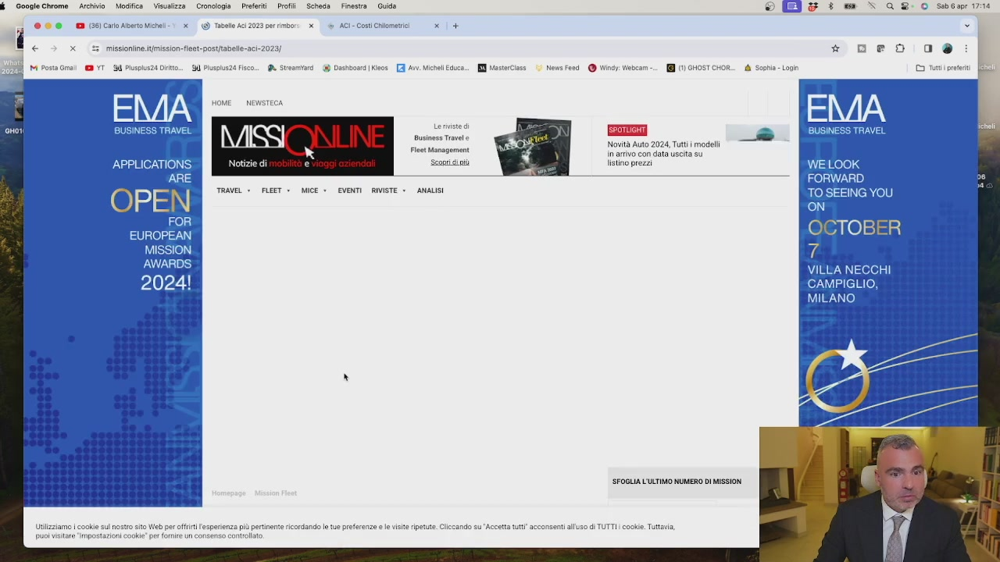
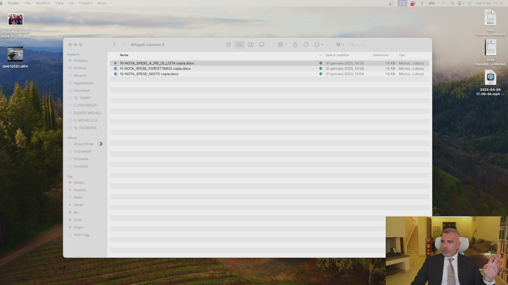

Nell'utilizzo della propria vettura e nell'esploitamento delle cariche amministrative, un amministratore di società, di capitali o di persone può ottenere il rimborso chilometrico. All'interno di questo videocorso troverete degli allegati. Questi allegati, eccoli qua,

OCR: PETS Ri legati Lezione i Modo $ E Alogoti Lezione 2 ER) legati Lezione I Alogati Lezione a ONERI DETRAIBILI opie pd O BR cicromorore ‘AUTOFURGONE
all'interno, ad esempio, della lezione precedente, trovate, interpello Welfare, una bozza di regolamento Welfare, degli articoli che vi ho selezionato, poi potete vederli, un altro articolo sui buoni pasto e una presentazione di Everred. Adesso quello che voglio vedere è il costo chilometrico. Sempre in quest'ottica io vi ho inserito, sempre in quest'ottica, vi ho inserito anche, modulo qua, in questa lezione 2, la nota spese che si utilizza per il piedilista, quindi come si rimborsano le spese e cosa ci dovete mettere, sul forfettario, quindi le 46 euro e 48 al giorno che vediamo nella prossima lezione, e se la nota di spese è mista. Quindi avete tutti i moduli. Dovete solo farle, queste cose. Avete tutto.

OCR: $ Finder Fie Modifica Vista Vai Finestra Auto È & 3 we “> QUR- O sabario © © 12-NOTA_SPESE_MISTO copia.docx Allegati Lezione 2 T0.NOTA SPESE P T2-NOTA_SPESE sTO i
Che cosa consiste il rimborso chilometrico? Sul sito dell'ACI c'è un servizio che ci si può registrare gratuitamente oppure ci sono una lista Excel dove voi andate a selezionare il veicolo e vi dice quanto vi rimborso a chilometro. Quindi voi vi fate un file Excel, ci mettete la data oppure un'agenda, dite che siete andati in un posto e quell'altro, non vale lo spostamento a casa ufficio. Siete andati in un posto piuttosto che in un altro, ci mettete il totale dei chilometri, lo moltiplicate per la vostra autovettura ed ecco fatto. Ogni mese compilate la ricevuta, ci mettete la marca di volo e vi fate il bonifico, ci pagate l'era auto dell'auto. Potenzialmente avere un'Alfa Romeo a gasolio che magari è una Stelvio, Giulia, c'avete una Giulia, 2.0 Turbodiesel, 150 cavalli, in produzione e fuori

OCR: $ Ocogiechrome Archivio Modifica Visualizza Cronologia Preferiti Profili Scheda Finestra Guida © Ei & : we “- qc 8-0 soc ros @ (3 costikmaci insert * peo da M Posta Gm SD YT. Bi Pispls2i Dito. DI Plussza risco 3 Kos [EI av Michell ecuce.. RI Meserciase 0 New fesd @ CHOR_ i Sophia - Logi LO TI pretr Seleziona un veicolo memori lun modello Seleziona un veicolo memorizzato (1) Scegli it modello del tuo veicolo ALFA ROMEO Gasolio 1156 1.9 JTD 140 - CV PROGRESSION 156 1.9 JTD 140 - CY PROGRESSION SM 1156 1.9/16V JTD - M-JET 150CV BERLINA 1156 1.9/16V JTD - M-JET 1S0CV SPORTWAGON SIA LALALLIET, IANCLDISTMON.NI O mR cicionorore
produzione lo stesso. Memorizza il veicolo, calcola. Il costo chilometrico complessivo per le percorrenze

OCR: $ Ocogiechrome Archivio Modifica Visualizza Cronologia Preferiti Profili Scheda Finestra Guida © E è : w “> oz 0 sasa va € > @ (E costtmaciivoricome *# peo od MI Posta Cms SD YT. Bi Puspls2i Dito KM astrciase 1) NemsFeed @ Wind Vibcan ome Cu al [TO è Calcolo dei costi chilometrici 1) INSERIMENTO DATI 2) Esito DEL caLcoLo Costi chilometrici al 06-04-2024 ALFA ROMEO GIULIA2.2 TD - 1500V Gasolio Autovettura EuroNCapS Euro6 N COSTI NON PROPORZIONALI IN € COSTI PROPORZIONALI IN €/KM Quota interessi 1.141,53 Quota capitale Tassa automobilistica 296,70 Carburante Premio ass. RCA 2.263,48 Pneumatici
annue è 0,42,67 o se fate più di 10.000 Chilometri 0,33,42. Il che significa che voi se fate 100 chilometri in un giorno per un'esigenza aziendale 0,33,42 con quest'auto qui, ma ci dovete mettere la vostra, basta scrivere tabelle, chilometri, asce e potete calcolare con la vostra vettura, per 100 chilometri avete diritto a 0,33,42. Ora se voi con la macchina ci fate 1000 chilometri al mese, 1500 chilometri al mese, immaginatevi 4,500, 600, 700 euro che ogni mese sono deducibili per l'azienda esentasse per voi e ecco che abbiamo lo spostamento

OCR: $ SocgieGivcne Morto Madia Voet Cromelogio — Pre Polli deine Pino Gab © Ri è : = - Ge: 0 sera 000 1 ps costo x | © Cale contitiomatii pi X | © ACI-conicisomatio x + > i. e costikim.aci.it/outcome * Deo ca SR PA Posta ma a VT MU Puspsza Dito... SU Pol Fico... A Stesmvard 9 Desio | eos _[R] Av. Michell Esce... [I sterlass _%) Nes end @ Windy beam. 1 oH dd Soste Log ©3 tutine Totale 0,2416 CC) KM GEp stampa — JR Esporta in excel Nel calcolo di costi i esercizio i fa riferimento ad un premio medio indicativo basato sulla zona di Roma, classe di merito 34, uomo di 35-50 a massimali minimi di legge in vigore. Perttenere il costo d'esercizio in funzione di una situazione assicurativa diversa da quella indicata sarà su eseguire le seguenti operazioni a. Sostituire al premo ass. RCA. indicato nei cost non proporzionali quello realmente pagato dall'utente. b. Sommare tale importo lle altre voci componenti costi non proporzionali; nuovo totale va diviso perla percorrenza annua richiesta
di ricchezza dall'azienda a voi per una cosa che già state facendo. Chiaro? Questo è il funzionamento del rimborso chilometrico, poi ovviamente io andrò ad aprire il mio documento, rimborso a piedi lista, questa ecco la spesa di trasferta,

OCR: Finder File Modifica Vista Vai 012416 Se 2024-08-06 17:08-38.mpa Scrivania Preventivi Smart "20-24

OCR: $ MicrosoftWord File Composizione Visualizza inserisci Formato Strumenti Tabella Finestra _? © Egg & : we >» a 0 sasa 1713 I 10-NOTA_SPESE A_PIELOLLSTA copia so mrici Degno Prgotiazione | Lyost -Rifoinomi Lotere. Revsone Vicsizza 2 sia < QEIEEREER Spettabile <...> Vila, 0 Cittaneie> Nota spese di trasferta Sig. <«..>, mato a <...>, residente in <.,.>, Vla s.. n. <...>, C.F. <...> Dipendente con qualifica <...>, (OPPURE AMMINISTRATORE) dell’ impresa (socie
dipendente oppure amministratore dell'impresa, spese di trasporto, altre spese di trasferta, andrò a compilare questo documento, ricordatevi che se il documento è superiore a 77 euro, è necessaria una marca da volo da 2 euro, ma voi ragazzi andate in tabaccheria, vi comprate 100 euro di marca da volo, ve le mettete da parte, ogni mese mettete lì e vi fate il rimborso delle spese per l'invenità chilometrica e il rimborso delle spese di trasferta che sono quelle che vi spiego ora nella prossima lezione. L'importante è che capiate questo link. Questo era il servizio dell'ACI, ma se voi andate su rimborso chilometrico ACI, ACI costi chilometrici, senza il servizio, proprio le tabelle ACI,

OCR: $ OoogleChrome Archivio Modifica Visualizza Cronologia Preferiti Profili Scheda Finestra Guida & & : » QU ®- O Sabiapr 17014 @ msc g{ehuometici pe x Log CI tutti prete 24 Fisco. A Sisma. De News Feed @ Windy: Webcam.) (1) GHOST cHOR su f Y@ in Cert pel Network AC Servizi Federazione —1Mobilià ’1Motorsport’AutoStorichee Turismo Comunicazione modello All'interno delle tabelle sono contenuti i costi auto al km per la gran parte delle autovetture circolanti in Italia; e tabelle sono elaborate anche per autofurgoni, motoveicoli e autocarri (su richiesta) 11 servizio di calcolo online è gratuito e disponibile con credenziali 0 dopo essersi registrati Accedi al servizio  OCR: $ Ocogiechrome Archivio Modifica Visualizza Cronologia Preferiti Profil! Scheda Finestra Guida È & 3 sw x Q R- O saba * eo oca 8 DashboatsKeos _[T] Ani MichllEduca.. [ astrciss 1) News Feed @ Why: beam -.._ (GHOST CHOR_. 1 Sophia - Login Business Travel pece] o Fist Management data us Notizie di Son iù iclino pre SFOGLIA L'ULTIMO NUMERO DI MISSION tilzziamo i cokie sui nostro sito Vie per fit esperienze più pertinente ricordando ze e le visite iprue. CI ‘acconsenti all'uso dTUTTI! cookie. Tuttavia tabelle ACI rimborso chilometrico, non so se lo trovate qui, missione online, questo non ci interessa, eccolo qui, c'è il servizio, costi chilometrici, vai al servizio e lo inserite.
Schermata 9 [00:05:11] scene
Si possono stampare, ora non mi ricordo il link preciso, ma lo trovate facile, si possono anche scaricare i file Excel con tutte le macchine, in produzione o fuori produzione. Andate a individuare la vostra auto, ecco che lo trovate. Ma se io ho l'auto aziendale, ovviamente se hai l'auto aziendale non puoi usufruire di questo servizio, perché se hai l'auto aziendale ti fai la scheda carburante, così hai una fattura elettronica al mese e sei a posto, hai il telepass aziendale.
Schermata 10 [00:05:42] scene
In questo caso invece se l'auto non è aziendale porti in deduzione il rimborso chilometrico. Quindi rimborso chilometrico l'abbiamo visto, mi raccomando tornate su queste che trovate qua, dove c'avete nota spesa, rimborso a piedi lista, eccola qua la nota spesa,
Schermata 11 [00:06:12] scene
spettabile, qua ci si metterà spettabile il nome della vostra società, via eccetera, signor Carlo Alberto Micheli, nato a Viareggio, residente a Luqui in Viareggio, amministratore dell'impresa con sede in, ecco che nel periodo dall'1 marzo al 31 marzo ho fatto queste X trasferte con queste destinazioni, se volete farle separate o se volete farle tutte insieme potete utilizzare questa tabella. Non c'è, attenzione perché vi dico questa tabella, non c'è un modulo precompilato standard, quindi in realtà esistono anche quelli della Buffetti per intenderci già pronti, oppure esistono questi, non c'è un modulo precompilato, quindi è una ricevuta in carta libera dove voi andate semplicemente a indicare tutti i punti e tutte le informazioni necessarie.
Schermata 12 [00:06:54] scene
L'unica accortezza che dovete fare è la marca da bolo da 2 euro quando la nota di trasferta supera i 77 euro, che vedrete è la maggior parte delle volte perché dall'indenità chilometrica e dagli imborsi chilometrici vengono fuori tanti tanti soldi, che unite? L'indenità chilometrica non è la piedilista, la piedilista è un'altra cosa, è il suo problema della chilometrica, la piedilista è quando voi chiedete l'imborso del parcheggio, l'imborso del pasto, l'imborso con tutti gli scontrini, l'imborso chilometrico si somma all'indenità di trasferte che sono quelle che vediamo nella prossima lezione.
Schermata 13 [00:07:54] periodic
Se i 77 euro fate presto a superarlo vedrete che per chi fa con un'auto normale a meno 1500 chilometri al mese tira fuori dall'azienda fra le 7 e le 9 mila euro, esentasse, ci paghi la rata della macchina.